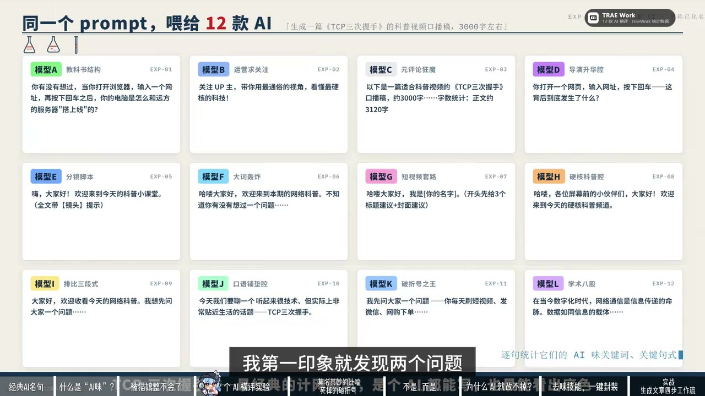

原视频 · 在线回看
点击后联网加载 B 站播放器；本地不下载整段视频。

原视频 · 在线回看
点击后联网加载 B 站播放器；本地不下载整段视频。
原标题：为什么 AI 写的东西一眼就能看出来？我做了个去AI味技能
UP 主：网络小白_Uncle城
时长：15 分 10 秒
链接：https://www.bilibili.com/video/BV1uQ8E6LE6G/
阅读强度：标准
一篇科普稿可能句句通顺，却让人读得不耐烦：开头反复邀请读者提问，中间不断宣布要讲什么，讲解到一半又堆出许多听起来宏大的词。读者等了半天，仍然想知道一个具体问题究竟怎样发生。这种感受常被叫作“AI 味”。它描述的是读者对表达的印象，单凭某个词或标点，无法可靠判断一篇文章由谁写成。
网络小白_Uncle城在尝试用 AI 写视频稿时，对这些重复出现的表达产生兴趣。他整理了自己的观察，又用同一个任务比较多个生成结果，最后把修改规则做成技能。
测试任务是写一篇约三千字、介绍 TCP 三次握手的科普口播稿。TCP 是计算机网络中的一种传输协议；三次握手是建立连接时双方交换信息的过程。分享者称他给十二款 AI 使用同一提示词，各生成一篇稿件，再检查开头和句式。按照他的统计，十二篇中有十篇使用了相似的问候或提问式开场，十二篇都使用了明确的分点结构。
分享者还称，统计到这组稿件中类似分点表达共出现 302 次，平均每篇约 25 次。这是对该任务、该提示词和当次输出的自报统计；十二篇样本不足以说明所有模型或所有写作任务都会这样。文章有清晰的步骤本来很有用，值得检查的是分点是否帮助读者理解，还是每一小段都按同一节奏重复编号。
一个具体例子是描述三次握手时，把第一个请求包比作在沙漠里迷路的企鹅。读者可以想象企鹅，却不容易从这个画面理解客户端和服务器交换了什么。比喻如果要帮助理解，需要让被比较的事物之间存在可解释的对应关系；画面越热闹，并不代表协议步骤越清楚。
同样，一段文字可能不断出现抽象的大词，却很少说清楚谁在做什么。把“连接”“效率”或“可靠性”放在一句话里，并不自动解释三次握手的作用。可以回到具体过程：当前讲的是哪一方发出什么信息，另一方如何回应，这一步与前后步骤有什么关系。每一个术语如果承担解释作用，就应能对应到正在讨论的对象。
还有一种写法先替读者假定一个想法，再宣布这个想法错了。这样的对照在确实存在容易混淆的观点时可能有用；如果前面的观点完全由作者自己编造，就容易让读者觉得在看一场无须发生的辩论。检查时可以问：这个被反驳的观点真的与读者的疑问有关吗？如果没有，直接说明关键事实也许更清楚。
分享者提到一个让他改变看法的例子：有人用带有猫角色语气的文字解释模型训练，回答里出现许多“喵”，原先那些正式、重复的套话减少了。随后他尝试在提示中要求类似语气，也看到了明显不同的文字风格。这个例子显示，提示中的风格要求能够改变某次输出的表面表达。
一种语气是否自然，因读者和情境而异；换成角色口吻也可能让严肃说明更难阅读。这个例子把语气变化呈现得很直观。
对于形成重复句式的原因，分享者提出与训练反馈和模型输出习惯有关的解释。他把不同模型的表达相似归因于奖励过程，也猜测高度可预测的文字会让人失去兴趣。这些是解释性观点；展示的十二篇稿件没有隔离训练、提示词、模型或读者因素，因而无法单独证明这些机制。不同系统的训练与生成方式也可能不同。
他把修改过程组织成四层。第一层检查反复出现的词、句型和标点；第二层看开头是否具体、句子节奏和整体语气是否协调；第三层回到内容，检查观点是否有细节支持、比喻是否讲得通、有没有凭空加入事实；最后再通读，感受整篇文字是否适合读者与用途。
这四层各自关注不同问题。查出一个高频词，可以提醒我们看周围段落；但机械删除每一个破折号或每一次分点，未必会改善意思。内容检查也不能只看句子是否顺畅：一段自然的说明如果把协议步骤讲错，仍然需要纠正。检查时可以先保住事实和原意，再决定怎样调整表达。
随后展示了一次从检索、整理、生成初稿到调用技能修改的过程：先搜索相关表达，再依据结果做词频分析和文章初稿，最后检查措辞、句式与标点。
文章最终要让读者理解具体内容。检查表达时，我们可以留意反复出现的模板、缺乏对应关系的比喻和空泛的词，再读一遍：每段有没有交代清楚正在讨论什么、为什么与当前问题有关？留下真正服务读者的结构和细节，也给作者自己的语气留出空间。